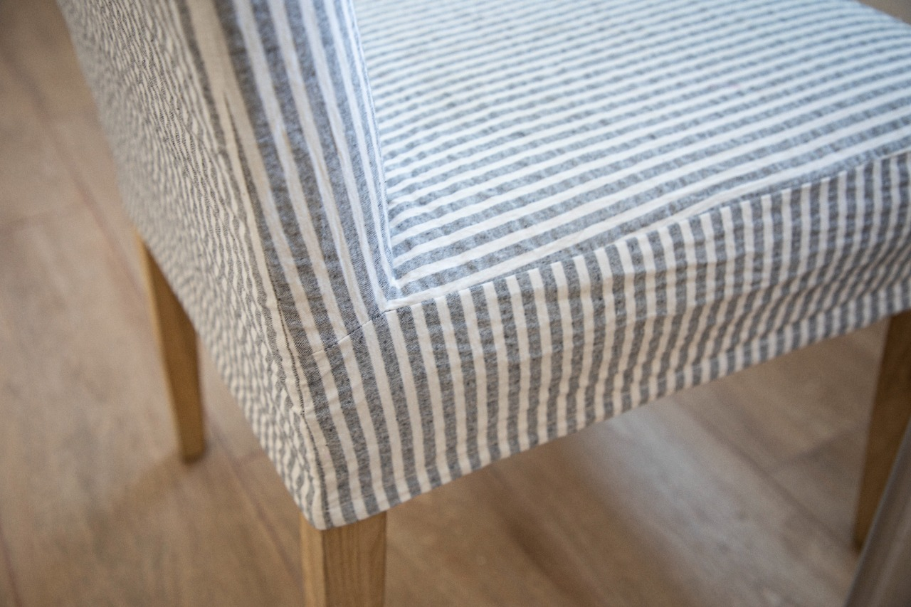
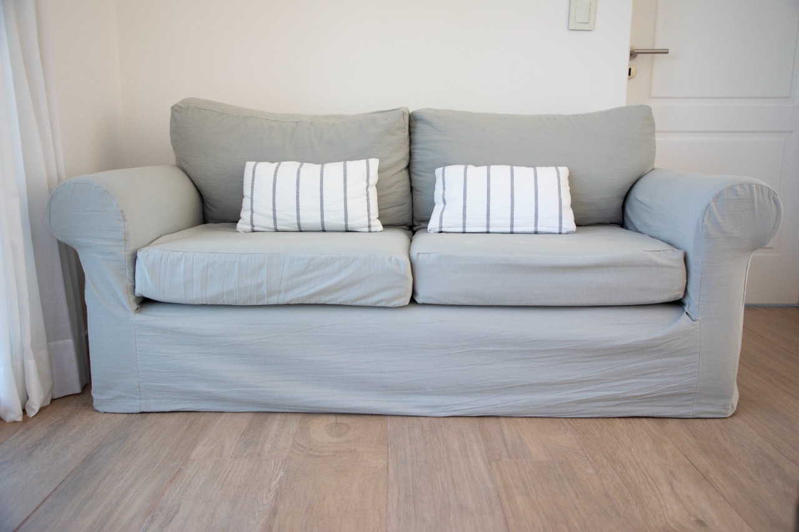

Fundas a Medida
Protección y estilo para tus sillas. Confeccionadas artesanalmente con géneros de primera calidad en nuestro taller de Don Torcuato.
CONSULTAR WHATSAPP
Protección y estilo para tus sillas. Confeccionadas artesanalmente con géneros de primera calidad en nuestro taller de Don Torcuato.
CONSULTAR WHATSAPP
Estructuras reforzadas y terminaciones premium para tu hogar. Fundas de Tusor y Lino pre-lavadas.